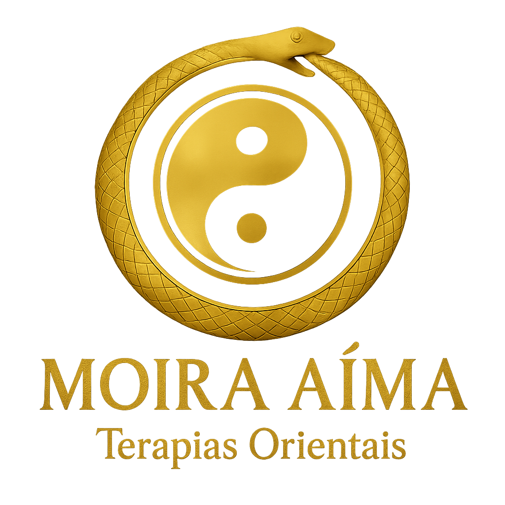
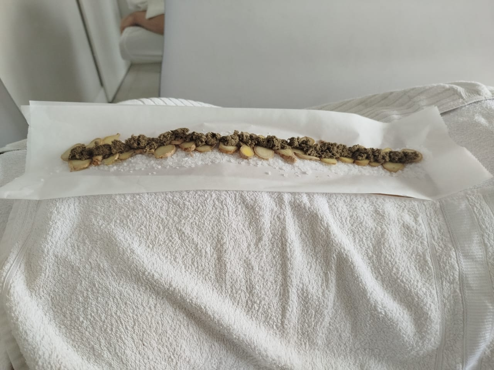
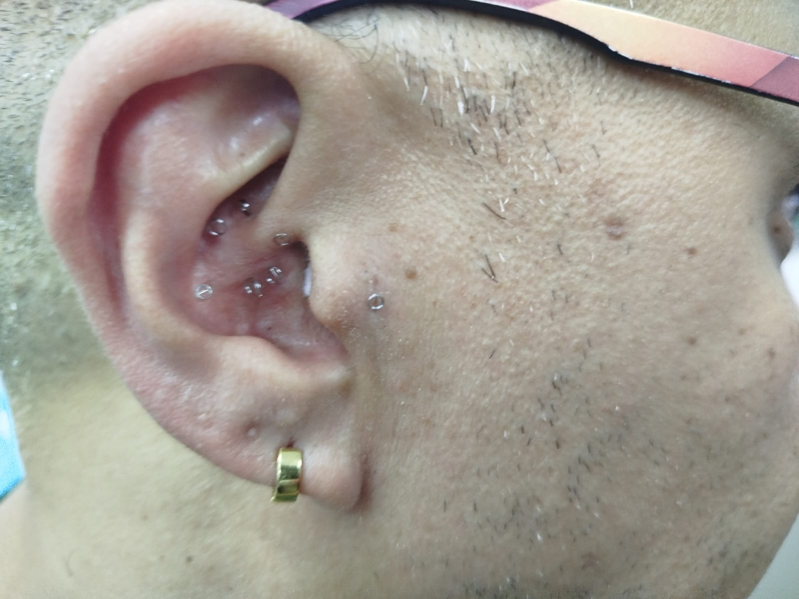

Acupuntura & Bem-Estar
Harmonize sua energia vital e recupere o equilíbrio natural do seu corpo através da medicina milenar.




Harmonize sua energia vital e recupere o equilíbrio natural do seu corpo através da medicina milenar.